Shaper
Defines the cycle. Starts interviews. Approves toolkit release.
BWAI Share / Quarterly planning prototype
Prototype walkthrough · 17 August 2026
This follows one fictional leadership team through every prototype step. It explains each action, context boundary, system behavior, and gap.
The screenshots contain invented people and company data. Authentication, Core storage, model calls, and authorization are mocked.
Defines the cycle. Starts interviews. Approves toolkit release.
Interviews privately. Controls every released contribution.
Reviews approved evidence. Edits the planning toolkit.
One person may act as shaper and planner.
The role switcher appears above every workspace.
Choose a person. Then choose one assigned role.
The visible screens and data change immediately.
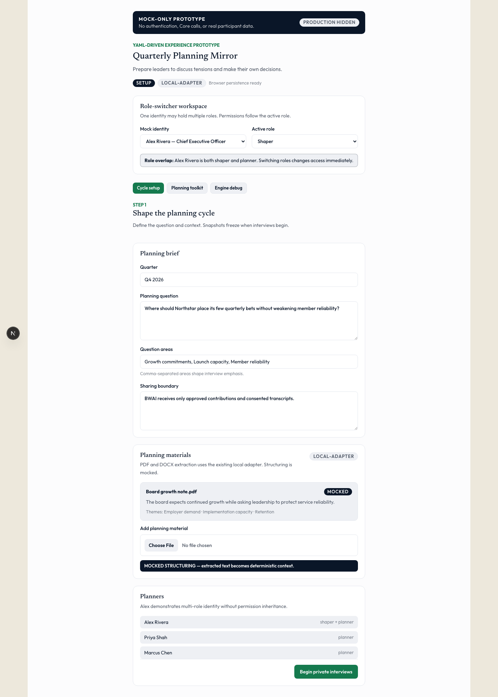
person-id identifies every participant.
Permissions follow the active role only.
The YAML allows one identity to hold several roles.
The browser stores the selected person and role.
Permissions are not server-enforced. Anyone can switch identities locally.
The shaper defines one shared planning question.
Quarter, question, focus areas, sharing boundary, and participants.
The shaper uploads PDF or DOCX planning materials.
A cycle-specific planning context becomes ready.
Company profile. Owner: company. Lifetime: durable. Scope: organization.
Planning context. Owner: company. Lifetime: cycle. Scope: task.
Question, themes, sharing rule, roster, and extracted materials.
Organization tailoring uses approved vocabulary and decision rights.
The existing PDF and DOCX parser extracts text locally.
Summary, vocabulary, cadence, and decision rights.
Document interpretation is mocked. Themes and summaries are predetermined.
Participants cannot be invited, removed, or notified here.
Everyone starts from the same planning inputs.
Select “Begin private interviews.”
The company and planning context receive snapshot identifiers.
The setup fields lock for this cycle.
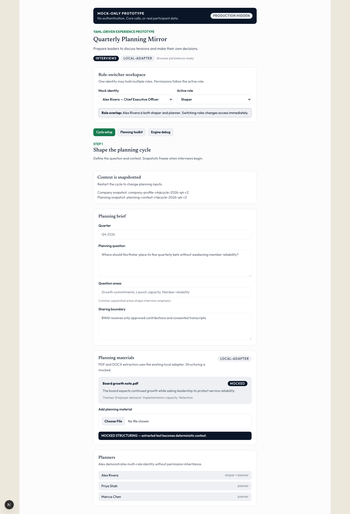
Durable organization context receives a cycle identifier.
The task context freezes at interview start.
Each planner’s profile receives a separate snapshot identifier.
Shared context reaches all three roles.
Snapshots are strings inside browser storage. Core stores nothing.
No amendment process handles incorrect shared context.
The conversation resumes as one continuous thread.
Personal profile, private thread, and active model context.
The planner adds evidence, tensions, and uncertainty.
The thread continues across browser reloads.
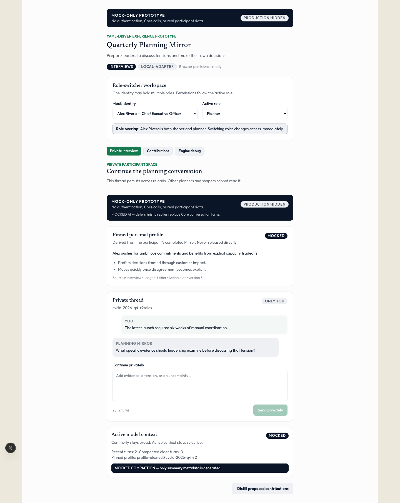
Owner: person. Lifetime: durable. Scope: user.
Mirror summary, confirmed claims, sources, and version.
Owner: person. Lifetime: cycle. Scope: task.
cycle-id/person-id keeps each conversation separate.
Four recent turns plus pinned profile and snapshots.
Shared rules, company tailoring, and private interview guidance.
The assistant replies are fixed. No model call occurs.
History compaction records counts, not useful summaries.
Privacy helps candor, but facilitation quality remains untested.
Private interview content remains private by default.
Distill one interview into removable contribution proposals.
Review wording, audience, attribution, transcript access, and release.
Only fully approved contributions reach BWAI.
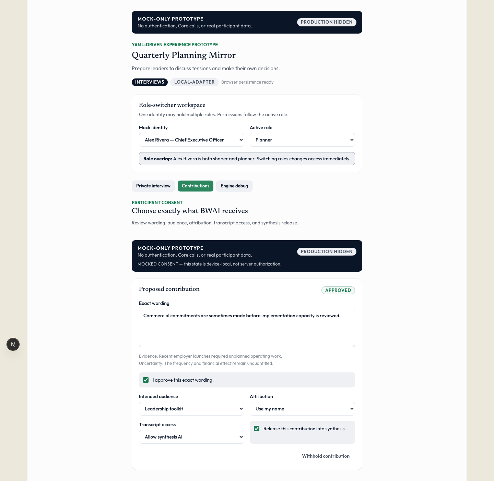
One planner’s private interview record.
Approved contribution. Owner: person. Lifetime: cycle. Scope: task.
Exact wording, evidence, uncertainty, audience, and consent decisions.
The planner and BWAI may see released contributions.
Distillation preserves uncertainty and assumes no audience.
All five consent decisions must be complete.
Consent is browser state. It is not authorization evidence.
Distilled wording is predetermined and unevaluated.
BWAI owns the first human checkpoint.
Approved evidence, attribution, and transcript status.
BWAI confirms privacy treatment before starting synthesis.
Released contributions lock against later withdrawal.
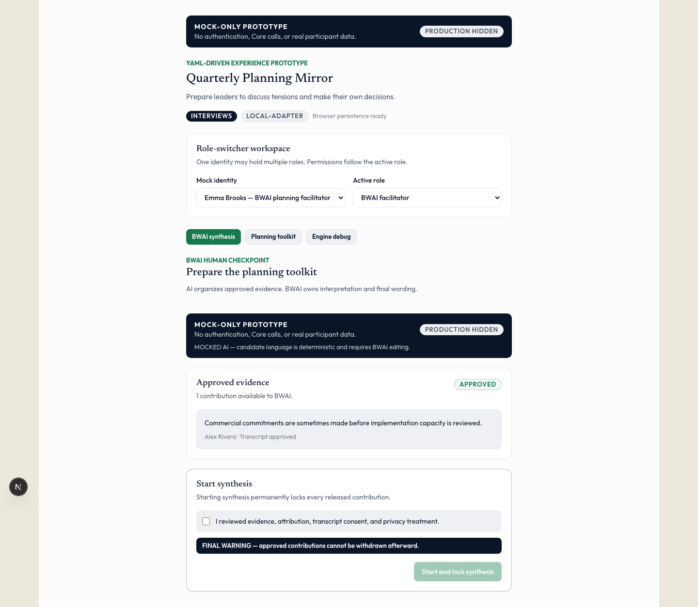
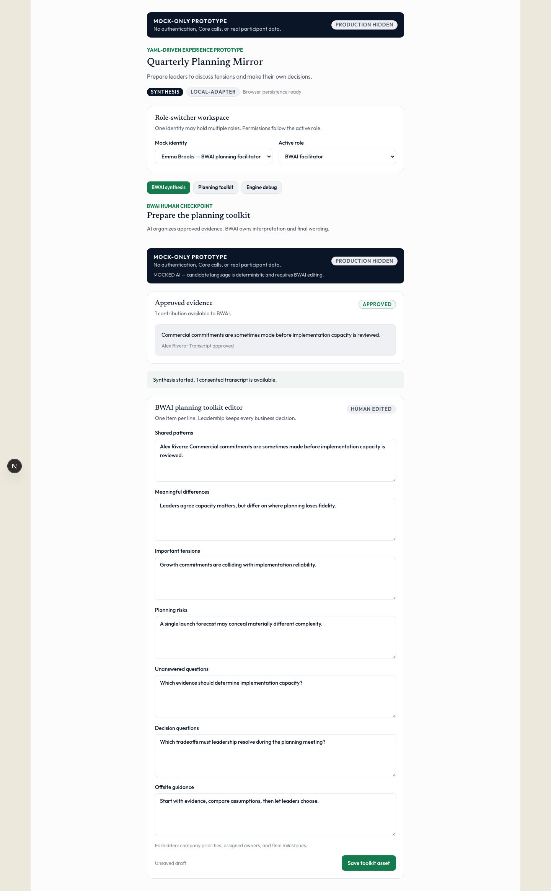
Released contributions and consented transcripts only.
Owner: BWAI. Lifetime: cycle. Scope: task. BWAI-only.
BWAI synthesis organizes patterns, tensions, gaps, and language.
The prompt forbids priorities, owners, and final milestones.
Every released contribution becomes immutable after starting.
Only explicit transcript consent grants BWAI access.
The lock lacks server authority, auditing, and recovery controls.
Synthesis uses fixed candidate language. Provenance is incomplete.
YAML says interviews remain planner-only. Runtime grants consented BWAI access.
BWAI reviews every generated section before release.
Seven editable toolkit sections.
BWAI changes candidate wording and saves the asset.
The shaper receives the toolkit, never private inputs.
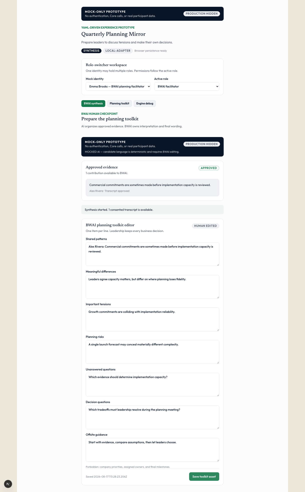
Patterns, differences, tensions, risks, questions, and meeting guidance.
Owner: BWAI. Lifetime: cycle. Scope: task. Versioned.
Company priorities, assigned owners, and final milestones.
Saving clears any previous shaper approval.
No citations connect toolkit language to specific evidence.
No version comparison, comments, exports, or shared editing.
The shaper controls distribution to planners.
A read-only toolkit and release checkpoint.
The shaper reviews everything and approves distribution.
Every planner gains toolkit access.
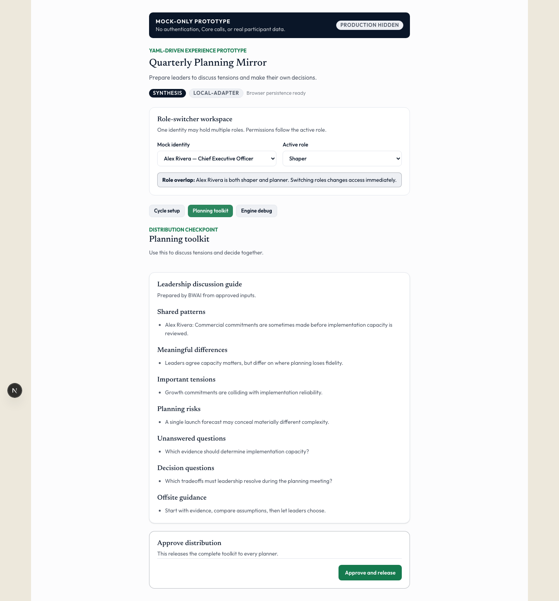
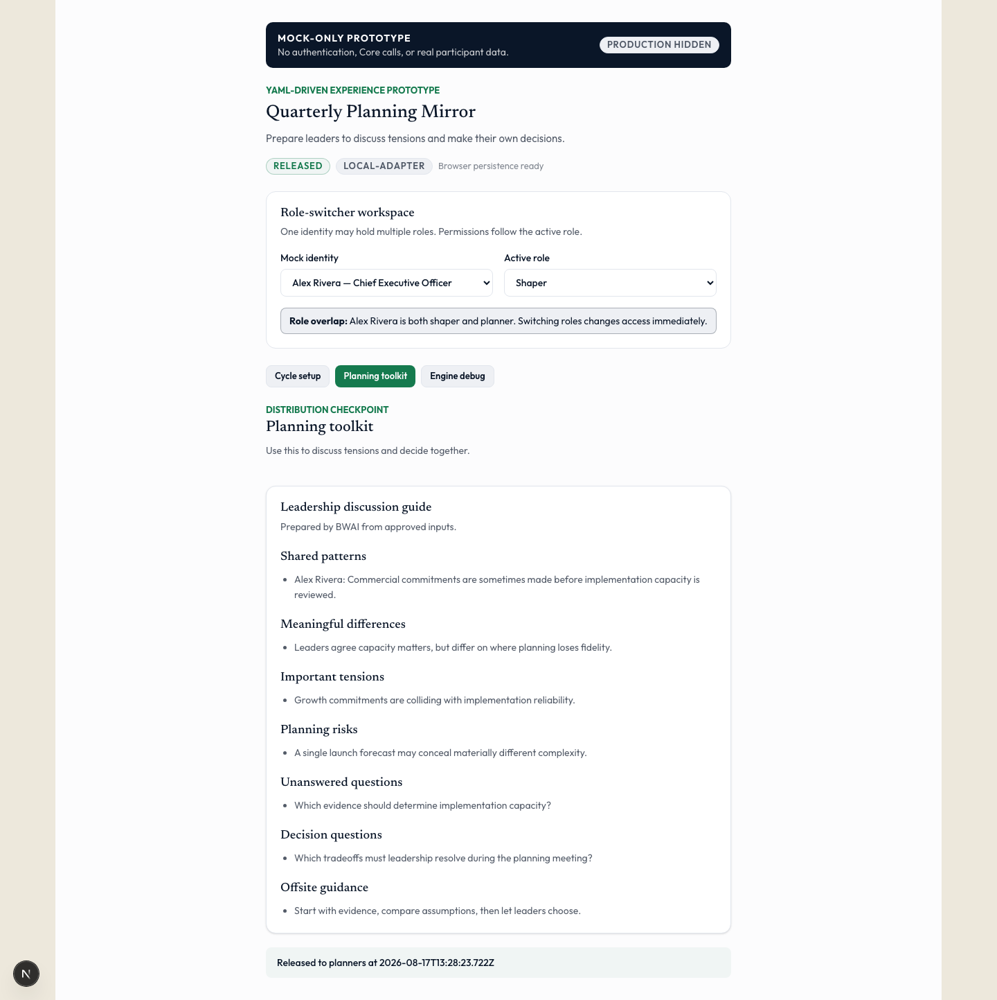
A saved BWAI toolkit asset.
Release checks three configured decision phrases.
The shaper approves the complete toolkit.
The asset gains approval and release timestamps.
Release is local. No participant actually receives anything.
No staged review, acknowledgement, or rollback workflow exists.
The decision safeguard uses keywords, not semantic validation.
Planners receive a discussion guide, not final decisions.
A read-only leadership discussion guide.
Leaders discuss evidence, tensions, risks, and questions.
Leadership makes priorities, ownership, and milestone decisions.
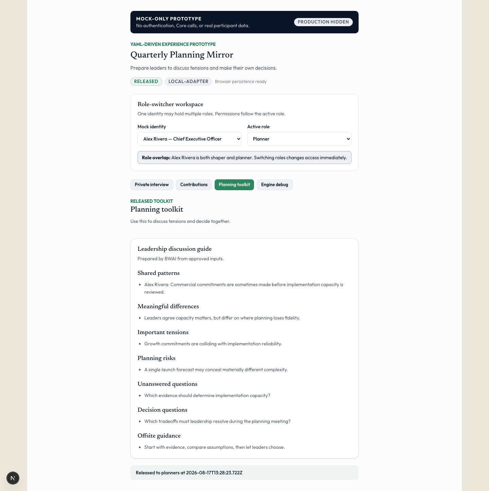
Shaper, planners, and BWAI may read the released asset.
Personal profiles and interviews remain excluded.
Prepare discussion. Do not replace leadership judgment.
The complete toolkit stays inside one browser.
The collaborative planning meeting is absent.
No final plan, decisions, owners, milestones, or action plan exists.
The debug screen exposes every prototype boundary.
Capabilities, contexts, prompts, state, mocks, and YAML.
Switch roles and inspect each filtered runtime view.
Developers can compare configuration against behavior.
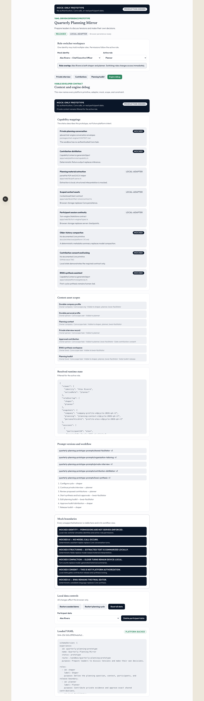
Roles, assets, prompts, capabilities, workflow, gates, and limits.
A strict schema validates YAML before generation.
The app imports typed output and the original YAML.
Five separate version-one prompt modules exist.
File extraction, browser persistence, and session checkpoints.
Identity, interviews, compaction, consent, and synthesis.
The YAML configures this prototype, not a general engine.
The prompt modules are basic, unevaluated, and never invoked.
The prototype proves flow and contracts only.
Source: prototype branch codex/1766-quarterly-bwai, commit
1b664005. Screenshots were captured from the running app.
Prepared by an AI agent. Matt has not reviewed this artifact.